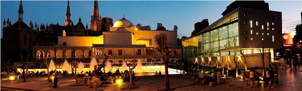
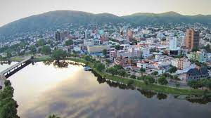

Cordoba

Abrir en Google Maps
El Paseo del Buen Pastor o Paseo Cultural del Buen Pastor es un centro cultural, recreativo y comercial
Creado y desarrollado entre 1997 y 2003 con la misión de atesorar y proteger la biodiversidad regional, el Jardín Botánico de Córdoba implementa programas educativos que promueven la conservación de la flora autóctona y el respeto hacia los recursos naturales.


Abrir en Google Maps
Villa Carlos Paz es una ciudad turística al oeste de Córdoba, en el centro de Argentina. Se encuentra en el Valle de Punilla, en las costas del lago San Roque. En el centro de la ciudad está el enorme Reloj Cucú de madera.